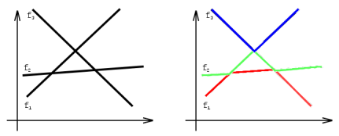

有 $n$ 个连续函数 $f_i(x)$，其中 $1≤i≤n$。对于任何两个函数 $f_i(x)$ 和 $f_j(x)$，$(i \ne j)$，恰好存在一个 $x$ 使得 $f_i(x)=f_j(x)$，并且存在无穷多的$x$ 使得 $f_i(x)<f_j(x)$。对于任何 $i,j,k$，满足 $1≤i<j<k≤n$，则不存在 $x$ 使得 $f_i(x)=f_j(x)=f_k(x)$。

如上左图就是 $3$ 个满足条件的函数，最左边从下往上依次为 $f_1,f_2,f_3$。右图中红色部分是这整个函数图像的最低层，我们称它为第一层。同理绿色部分称为第二层，蓝色部分称为第三层。注意到，右图中第一层左边一段属于 $f_1$，中间属于 $f_2$，最后属于 $f_3$。而第二层左边属于 $f_2$，接下来一段属于 $f_1$，再接下来一段属于 $f_3$，最后属于 $f_2$。因此，我们称第一层分为了三段，第二层分为了四段。同理第三层只分为了两段。求满足前面条件的 $n$ 个函数，第 $k$ 层最少能由多少段组成。
 Comet OJ
Comet OJ